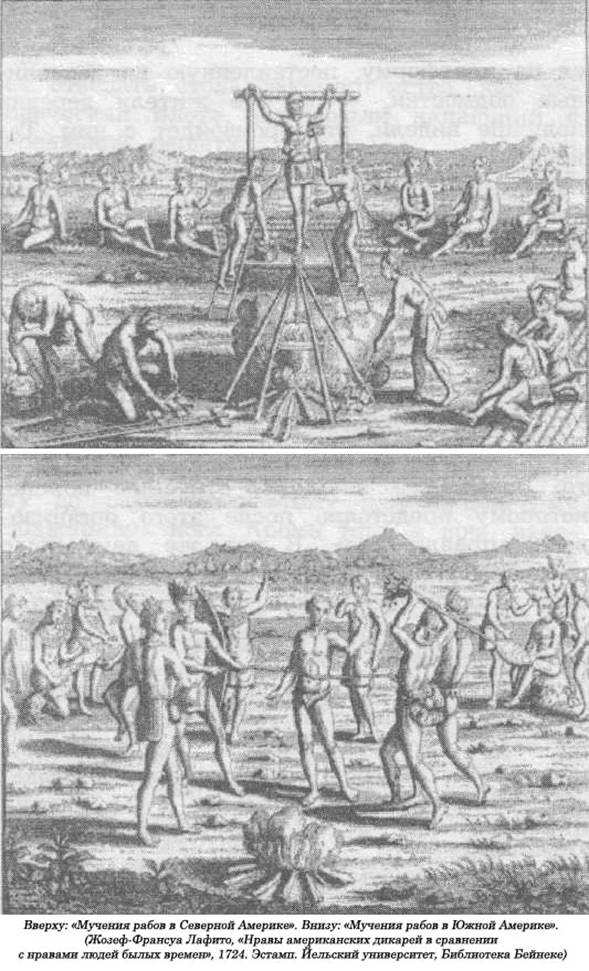
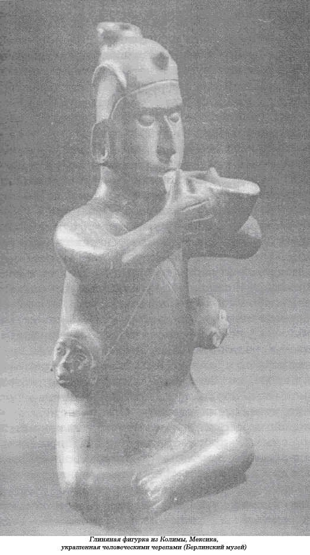
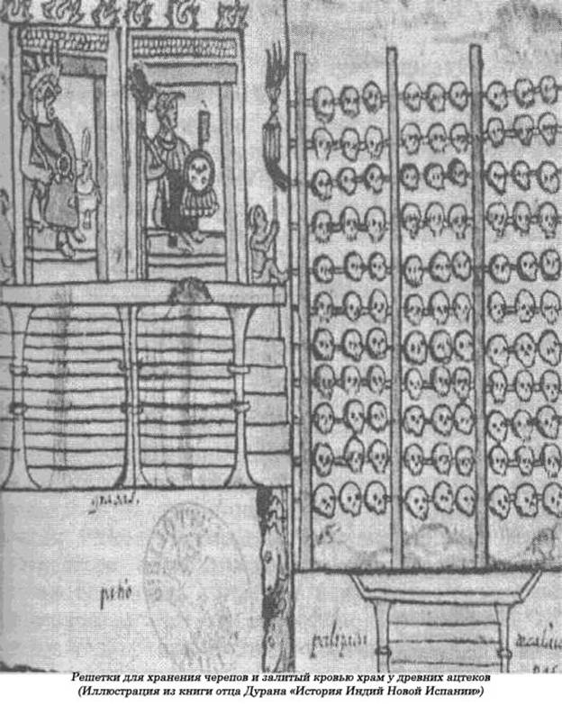
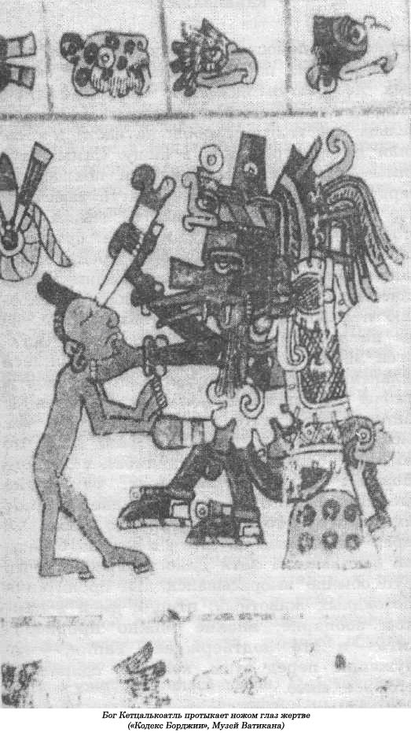

Обширное царство каннибалов.
Отлично вымуштрованный отряд, бездушных и беспощадных воинов-мясников, граждан той страны, в которой господствовала инквизиция, под командованием Эрнана Кортеса, прибыв в Мексику в 1519 году, состоял из бойцов далеко не слабонервных, давно привыкших к душераздирающим сценам жестокости, насилия и кровопролития. Поэтому они нисколько не удивились тому, что ацтеки постоянно приносят людей в жертву своим богам. А разве сами испанцы и другие европейцы с изощренной методичностью не раздрабливали кости своих жертв на дыбе, не разрывали их на части, привязывая к четверке лошадей, разве не избавлялись от женщин, обвиненных в колдовстве, отправляя на костер?
И все же они не были до конца готовы к тому, что им предстояло увидеть в Мексике.
Нигде в мире в такой мере не процветала финансируемая государством религия, чье искусство, архитектура, различные ритуалы до последней степени были подчинены господству откровенного насилия, смерти, тлена и болезней. Нигде прежде не видели они стены больших храмов и дворцов и прилегающие к ним площади с такой потрясающей экспозицией челюстей, зубов, пальцев с длинными ногтями, рук, костей и разверстых черепов. У Кортеса и его приятеля-конкистадора Бернала Диаса не оставалось и тени сомнения по поводу религиозного значения этих вселяющих в душу ужас, искаженных лиц, вырубленных в камне. Боги ацтеков поедали людей. Они пожирали их сердца, пили их кровь. А объявленная во всеуслышание главная обязанность ацтекских жрецов состояла в бесперебойном снабжении их новыми человеческими сердцами, новой теплой кровью, чтобы не дать повода своим божествам прогневаться и нанести им непоправимый урон, навлечь на них болезнь, порчу и позволить им таким образом уничтожить весь мир.
Испанцам впервые удалось увидеть внутреннее убранство главного храма ацтеков, когда последний из ацтекских царей Монтесума пригласил их туда на экскурсию. Сам царь все еще не принял окончательного решения, что ему делать с пришельцами, — и это была ошибка, которая очень скоро станет для него роковой, — когда пригласил испанцев подняться по 114 ступеням к двум храмам-близнецам Уицилопоутль и Тлалок, сооруженным на вершине самой высокой пирамиды Теноутитлан, возведенной в центре сегодняшнего Мехико-Сити. «Когда мы поднимались по длинной и высокой лестнице, — писал в своих воспоминаниях Бернал Диас, — перед нашим взором открывались другие храмы и священные места поклонения, все они были построены из белого камня и блестели на жарком солнце. На вершине пирамиды на открытом воздухе стояли громадные валуны, на которых приносили в жертву богам несчастных индейцев. Там мы увидели большое неуклюжее изваяние, похожее на дракона, и множество других каменных фигур с жестокими, злыми лицами, — сколько же крови пролилось на наших глазах в тот день! Потом Монтесума повел своих гостей полюбоваться богом Уицилопоутлем. У него было широкое лицо и чудовищные, вселяющие панический страх глаза. Перед ним догорали сердца трех индейцев, которых принесли ему в жертву. Стены и пол храма были настолько густо залиты кровью, что казались черными, а во всем помещении стояла отвратительная вонь. В храме другого бога тоже все вокруг было залито кровью: и стены, и даже алтарь, стояло такое зловоние, что мы едва дождались момента, чтобы поскорее уйти оттуда».
Главным источником «пищи» для ацтекских богов были пленники, которых вели вверх по ступеням пирамиды к храмам. Там их хватали четверо жрецов, распинали на каменном алтаре и одним мощным ударом острого ножа из вулканического стекла, который им подавал пятый священнослужитель, вспарывали им грудь от плеча до плеча. Из груди несчастного вырывали еще бьющееся сердце и тут же сжигали его на огне. Таким было жертвоприношение. Мертвые тела сбрасывали с пирамиды вниз, по крутым ступеням.
Иногда таким ритуальным жертвам, особенно отличившимся в бою воинам, предоставлялась особая привилегия: они могли защищаться перед тем, как принять верную смерть. Бернандо де Саагун, величайший историк и этнограф, специалист по ацтекам, так описывал эти «потешные» бои:
"...Они также умерщвляли некоторых пленников, устраивали для этого демонстрационные бои. Привязывали несчастного обреченного за талию длинной веревкой, пронизав ее через паз круглого, как мельничный жернов, камня. Это давало ему возможность более или менее свободно передвигаться по ограниченному пространству. Потом ему вручали оружие. Против будущей жертвы выходило обычно четыре воина в полном воинском снаряжении, с мечами и щитами. Они обменивались с ним яростными ударами, покуда пленник не падал, бездыханный, к их ногам...»
Вероятно, за три века до этого в государстве ацтеков и сам царь не отказывал себе в удовольствии заколоть несколько человек, избранных для жертвоприношения, собственными руками. Вот что рассказывает Диего Дуран о легендарной массовой кровавой расправе над пленниками, захваченными миутеками:
«К ним подошли пятеро жрецов и пальцем указали на того, кто стоял в первом ряду... Каждого из них провожали до того места, где стоял царь, и силой заставляли его стать на камень, похожий на солнце. Потом они опрокидывали его на спину. Один из жрецов держал пленника за правую руку, второй — за левую, третий — за левую ногу, четвертый — за правую, а пятый в это время ловко привязывал его шею к камню веревкой. Теперь несчастный не мог шевельнуть и пальцем.
Царь, взмахнув ножом, вонзал его пленнику в грудь. Разрезав ее пошире, он вырывал у него сердце и поднимал его обеими руками вверх, предлагая этот дар Солнцу. Когда сердце в его руках остывало, он, налив из него крови в пригоршню, разбрызгивал ее в направлении светила. Потом бросал сердце в специальную кругообразную выемку в камне.»
Однако не все жертвы были пленниками. В жертву приносилось немало рабов. Кроме того, среди красивых юношей и девушек производили отбор кандидатов на исполнение ролей определенных богов и богинь. За ними с особым вниманием ухаживали в течение всего года до казни. В «Дрезденском кодексе», книге XVI века, написанной на языке ацтеков науатль, приводится рассказ об одной женщине, которой предстояло сыграть роль богини Устокуатль:
«Только после того, как были заколоты все пленники, наступила очередь женщины, олицетворяющей богиню. Она была последней. К ней подошли жрецы и занимались только ею.
Закончив общение с ней, они уложили ее спиной на каменный жертвенник и крепко держали ее. Жрецы широко раздвинули ее ноги, раскинули руки, выпятили ее грудь, пригнув голову к земле. Наклонившись над жертвой, они с силой прижали к ее горлу длинный костяной, весь усеянный острыми шипами нос рыбы-меч с иглами с обеих сторон.
Палач сидя наблюдал за подготовкой. Он встал. Подойдя к жертве, он ножом распорол ее грудь. Кровь, словно закипев, забила фонтаном. Нащупав руками сердце, он вырвал его из груди, подняв его высоко, к Солнцу. Это жертвоприношение предназначалось ему, их главному богу. После этого он бросил теплое еще сердце в большой зеленый каменный кувшин. Во время торжественного ритуала раздавался громкий трубный рев. Затем тело жертвы вместе с сердцем было положено на землю и накрыто дорогой мантией».
Но такие демонстрации поклонения божеству проходили довольно редко. Большинство жертв уныло тащились, еле передвигая ноги, к месту казни по ступенькам, а многих даже приходилось волочь за волосы. Их совсем не прельщала перспектива доставить радость какому-то богу.
Ацтеки, конечно, не были первыми мезоамериканцами, которые приносили людей в жертву своим богам. Известно, что толтеки и майя тоже занимались подобной практикой, и вполне резонно можно предположить, что крутые, почти отвесные со всех сторон мезоамериканские пирамиды с плоской верхушкой как раз и предназначались для кровавого спектакля, когда людей приносили в жертву богам, чтобы «умилостивить» их. Нельзя сказать, что человеческие жертвоприношения — это изобретение государственных религий. Если судить по опыту отдельных групп людей или сельских общин, то можно сказать, что на всей территории обеих Америк, как и в других районах мира, практика человеческих жертвоприношений существовала задолго до возникновения государственных религий.
От Бразилии до Великих равнин в общинах американских индейцев существовал ритуал принесения в жертву людей. По сути дела, каждый элемент ацтекского ритуала объясняется верованиями и практикой сельских жителей. Даже «хирургическая» операция по удалению сердца имела свою историю. В племени ирокезов постоянно шла борьба за право съесть кусочек сердца бесстрашного воина, чтобы таким образом позаимствовать у него смелость и отвагу. Повсюду мужчины становились главными врагами. До того как принять смерть, их прогоняли сквозь строй, побивали камнями, избивали, поджигали, наносили увечья и подвергали другим невыносимым пыткам и насилию. Иногда их привязывали к столбу и, вручая палицу, предлагали защищаться от нападавших мучителей. Однако случалось, что несколько пленников по какой-то причине получали особую привилегию — их долго не убивали, хорошо кормили и даже предоставляли им наложниц.
Ритуальное жертвоприношение пленников в деревнях обычно сопровождалось своеобразным пиршеством, когда съедали либо весь труп жертвы, либо какую-то его часть. Благодаря свидетельству очевидца, немецкого моряка Ганца Штедена, корабль которого разбился у берегов Бразилии в начале XVI века, мы располагаем описанием того, как племя индейцев-упинамба соединяло обряд жертвоприношения с каннибализмом.
В день принесения в жертву пленника, всего связанного, выволакивали на деревенскую площадь. Его тут же окружали женщины, которые его оскорбляли и всячески издевались над ним, но ему разрешалось обороняться от них. Он кидал в них фрукты и черепки от глиняной посуды. Тем временем старухи, разукрашенные черно-красными полосами, с ожерельями из человеческих зубов на шее, притаскивали украшенные орнаментом глиняные горшки, в которых будут сварены кровь жертвы и его внутренности. Церемониальная дубинка, которая использовалась для убийства, переходила у мужчин из рук в руки, чтобы «наделить их силой и помочь поймать в будущем еще не одного пленника». На главном палаче была длинная накидка из перьев, и за ним шла толпа родственников, распевая гимны и нещадно колотя в барабаны. Палач с жертвой приступали к злой пикировке, чтобы высмеять друг друга. Пленник получал определенную свободу передвижений по ограниченному пространству, чтобы уклоняться от ударов, а иногда и ему давали дубинку, чтобы он мог обороняться от наседавших на него убийц. Когда же наконец ему раскраивали череп, раздавался радостный крик и свист. Если у пленника до казни была жена из местных, то она должна была проливать слезы над убитым, а потом присоединиться ко всеобщему торжеству. Старухи отталкивали одна другую, чтобы поскорее напиться теплой крови, а детям разрешалось погружать в нее ручки. Матери смазывали кровью соски, чтобы и младенцы могли почувствовать ее вкус. Тело разрубалось на части, которые жарились на вертеле, а старухи, которым не терпелось поскорее отведать столь лакомого яства, как человеческая плоть, слизывали капающий с деревянной решетки жир.
На расстоянии десяти тысяч миль к северу почти два столетия спустя миссионеры-иезуиты собственными глазами видели подобный ритуал среди индейцев племени гуронов в Канаде, Жертвой там оказался пленник из племени ирокезов, которого они схватили вместе с четырьмя его друзьями, когда они ловили рыбу на берегу озера Онтарио. Вождь местного племени объяснил членам своего клана, что ритуал, который поручено провести ему, имеет целью умилостивить Солнце и бога войны. Главное — не убивать жертву до рассвета, поэтому для начала ему «поджарили» ноги. Кроме того, в ночь накануне казни соплеменникам запрещалось иметь половые сношения. Пленника со связанными руками, то издававшего вопли от боли, то запевавшего боевую песнь, которую он выучил еще в детстве специально для такого, возможного в будущем, случая, ввели в хижину, где на него набросилась группа индейцев с горящими головешками из древесной коры. Он в ужасе перекатывался из одного угла в другой, а тем временем мучители выламывали ему руки, разбивая кости при помощи простой мускульной силы, прокалывали ему уши острыми палочками. Когда он оказался на грани смерти, вмешался вождь, приказав прекратить пытки, — нельзя убивать его сейчас, иначе он не увидит рассвета, объяснил он. На рассвете несчастного вывели из хижины и заставили подняться на платформу, поставленную на деревянные подмостки, чтобы все жители деревни получше видели, что произойдет с ним. Такие подмостки возводились специально для подобных ритуалов, так как в те времена еще не существовало пирамид с плоской площадкой наверху для этой цели. Теперь мужчины приступили к пыткам жертвы. Они выжигали ему глаза, прикладывали раскаленные докрасна лезвия топоров к плечам, заталкивали горящие головешки в горло и задний проход. Когда стало ясно, что он вот-вот испустит дух, один из палачей отрубил ему руку, другой — ногу, в то же мгновение третий отсек голову, бросив ее в толпу. Кто-то, поймав ее на лету, отнес ее вождю, которому предстояло после этого организовать «празднество». В тот же день было расчленено и изжарено мертвое тело жертвы. Возвращаясь домой, миссионеры встретили одного индейца, несшего на вертеле полузажаренную руку.
Сделаем здесь небольшую паузу, чтобы обсудить подобные ритуалы, которые обычно объясняют врожденными человеческими инстинктами. Особую тревогу у меня вызывают теории, выдержанные в духе учения Фрейда о том, что пытки, жертвоприношения и каннибализм — это следствия инстинктивного выражения либо чувства любви, либо агрессии. Например, Эли Саган заявил, что каннибализм — «это основополагающая форма человеческой агрессии», ибо он представляет собой своеобразный компромисс между любовью к жертве, проявляющейся в желании ее съесть, и ее убийством, потому что она вам досаждает. По-видимому, этим можно объяснить, почему иногда к жертвам относятся с невероятной добротой перед началом пыток — просто палачи вновь переживают отношения «любви — ненависти» со своими жертвами. Но такой подход не может объяснить одного: ведь пытки, жертвоприношения пленников не могут иметь места без наличия таковых, а откуда им взяться, если нет войн. Думается, что все теории, объясняющие войны проявлением человеческих инстинктов, не имеют под собой никакого основания и абсолютно бесполезны при объяснении интенсивности межгруппового конфликта, к тому же они весьма опасны, ибо подразумевают, что войны неизбежны. Попытки объяснить, почему вначале пленников балуют, изнеживают, потом подвергают пыткам, приносят в жертву, а потом съедают, в рамках теории конфликтующих универсальных инстинктов любви и ненависти опасны в силу тех же причин. Во-первых, их далеко не всегда балуют, пытают, приносят в жертву, а затем съедают, и любая теория, объясняющая такой «комплекс», должна не только проанализировать, почему это происходит, но также, почему не происходит. Если подобного рода действия являются частью вооруженного конфликта, то их объяснения прежде всего следует искать в военных расходах и полученных при этом выгодах. Захват пленников — это такая операция, успех которой целиком зависит от умения нападающих избежать контрнападений или засад на пути домой с такой нелегкой обузой, как плененные враги. Если группа нападения мала, если ей приходится преодолевать значительные расстояния по территории, где противник способен нанести ответный удар, то можно очень просто расстаться со своей добычей, то есть с пленниками. При таких непредвиденных обстоятельствах можно доставить домой не всего врага целиком, а лишь часть его — для подсчета убитых врагов, что является главным при распределении социальных и материальных привилегий среди тех воинов, которые отличились особой смелостью и отвагой в бою. Отсюда широко распространенный обычай приносить с собой только головы, скальпы, отрубленные пальцы и прочие части тела, а не живого пленника.
Когда пленника доставляют в деревню, то обращение с ним зависит в большей степени от способности его новых хозяев правильно пользоваться рабским трудом. Когда пленников немного и они появляются не так часто, то временное отношение к ним как к «дорогим гостям» не может вызывать особого удивления.
Какие бы двойственные переживания ни существовали в подсознании захватчиков, они отдают себе полный отчет в одном: пленник — это весьма ценное приобретение, ведь за него его нынешние владельцы рисковали собственной шкурой. Однако, как это часто бывает, он не находит способа влиться в новую для него племенную группу, а так как его нельзя отослать обратно, к своим, то принимается решение его убить. Даже пытка обладает своей мрачной экономикой. Если пытки, так сказать, — это способ умереть тысячу раз, то пытки одного несчастного пленника равносильны преданию смерти тысячи врагов. К тому же пытки — это еще и зрелища, развлечения, которые нравились самой широкой аудитории и получали ее полное одобрение с незапамятных времен. Я тем самым не хочу сказать, что человеку присуще получать наслаждение, наблюдая, как избивают, поджигают и расчленяют жертвы. Но вполне в духе человеческой природы особое внимание к необычным зрелищам и звукам, таким, как кровь, хлещущая из раны, громкие вопли или завывания пытаемых жертв, хотя при этом многие из нас в ужасе отворачиваются.

Дело не в том, что мы инстинктивно наслаждаемся, наблюдая за страданиями другого человека, а в том, что мы наделены способностью научиться наслаждаться этим. Осуществление на практике этой скрытой возможности играло важную роль в таких общинах, как племена тупинамба и гуронов. Существовали даже общины, в которых юношей специально обучали проявлять особую жестокость к своим врагам на поле брани. Подобные уроки усваиваются гораздо быстрее, если представить, что с тобой самим произойдет то же самое, что с этим попавшим к тебе в руки человеком. К ценности любого пленника следует добавить его живое тело, которое может стать мишенью для тренирующихся воинов, и даже его труп, так как он поможет обучению неопытных пока врачей. И здесь мы подходим к самому ритуалу убийства — жертвоприношению, чтобы умилостивить, задобрить богов, к палачам с их священным и магическим снаряжением, воздержанию от половых сношений и т.д. Для того чтобы все это понять, нужно осознать, что для сельских общин, племен война — это прежде всего ритуальное убийство, вне зависимости от того, где именно враг убит: на поле сражения или дома. Отправляясь на войну, воины расписывают свои тела, украшают себя перьями и кусками ткани, вызывают души предков, принимают галлюциногенные наркотики, чтобы установить контакт со своими духами-хранителями, а также усиливают убойность своего оружия с помощью разных магических заклинаний. Враги, поверженные на поле сражения, — это тоже жертвоприношение, так как их смерть угодна предкам или богам войны, как угодны им пытки и смерть пленника. Наконец, остается проблема каннибализма — вопрос, который, когда его кто-то задает, демонстрирует полное непонимание сути происходящего. Люди могут научиться любить вкус человеческого мяса или же относиться к нему с отвращением, но как можно научить наслаждаться сценами пыток или же приходить от них в ужас. Совершенно очевидно, что существует множество обстоятельств, при которых приобретенный вкус к человеческой плоти может найти свое место в системе мотиваций, подталкивающих общины людей к войне. Более того, съесть труп врага — это означает почерпнуть еще больше сил после его уничтожения. Теперь только требуется объяснить, почему в тех человеческих культурах, где без всяких угрызений убивают врагов, должны воздерживаться от следующего шага — съесть их? Однако это такая загадка, разрешить которую пока нам не под силу.
Если это небольшое отступление в область подсчета военных расходов и объяснений «комплекса» пытка — жертвоприношение — каннибализм кажется вам несколько формальным, то позвольте заверить вас, что авторы вовсе не отрицают существования двойственных психологических мотиваций, подобных тем, которые порождает «эдипов комплекс» в милитаристских обществах, прославляющих мужское превосходство. Представляется, что война вызывает противоречивые эмоции у участников и означает для них одновременно нечто совершенно различное. Вовсе не отрицается, что каннибализм может выражать одновременно и любовь и ненависть к жертве, но можно решительно выступить против утверждения, что специфические образцы межгрупповой агрессии можно объяснить какими-то неясными, противоречивыми психическими элементами, смело абстрагируясь при этом от других причин, заставляющих людей воевать друг с другом, и в первую очередь таких, как природные условия, нехватка продуктов питания и белков и инстинкт продолжения рода.
Возвращаясь к рассказу об ацтеках, можно с полным правом сказать, что единственным вкладом их религии в культуру было не введение в религиозный обиход человеческих жертвоприношений, а дальнейшая разработка этого ритуала в разрушительном направлении. Прежде всего ацтеки трансформировали человеческие жертвоприношения, превратив случайное везение на поле боя в тошнотворную рутину, когда не проходило и дня, чтобы очередную жертву не опрокидывали спиной на жертвенный камень, на алтари таких больших храмов, как Уицилопоутль и Тлалок. Подобные жертвоприношения проводились и в менее крупных храмах, вплоть до небольших часовен. Одна из них — низкое, круглое, с плоской крышей строение около шести метров в диаметре — была обнаружена при прокладке метро в Мехико. Теперь она стоит за стеклом на одной из самых оживленных станций. Для любопытных пассажиров на ней вывешена табличка, на которой указывается, что древние мексиканцы были «очень религиозными людьми». Так как армии ацтеков в тысячи раз превышали боевые отряды таких племен, как уроны или тупинамбе, то, вполне естественно, они могли захватить в плен тысячи вражеских воинов только в ходе одной-единственной битвы. Кроме повседневных жертвоприношений небольшого числа пленников и рабов в стране проводились и массовые расправы над сотнями и даже тысячами жертв для празднования каких-либо особо важных событий. Испанские историки, например, сообщили, что в 1487 году, во время освещения большой пирамиды Теноутитлан, перед ней на расстоянии двух миль были выстроены в четыре ряда пленники для принесения их в жертву богам. Палачи, выбиваясь из сил, работали день и ночь в течение четырех суток. Демограф и историк Шеберн Кук считал, что если на каждое жертвоприношение уходило по две минуты, то общее число жертв, убитых только во время этого события, равнялось 14 100. Масштабность подобных ритуалов можно было бы считать преувеличенной, если бы не свидетельства Бернала Диаса и Андреса де Тапии, которые собственными глазами видели аккуратно сложенные в кучи тысячи черепов. Их таким образом можно было легко подсчитать на площадях ацтекских городов. Диас, например, пишет, что на площади города Ксокотлан «лежали горы человеческих черепов аккуратными рядами, их весьма легко можно было подсчитать, мне кажется, их там было около ста тысяч».
Тапия также рассказал, что видел множество аккуратно разложенных черепов в самом центре города Теноутитлан:
«Шесты стояли друг от друга на расстоянии одной вары (приблизительно одного ядра), а на поперечных палках снизу доверху были нанизаны проткнутые у висков черепа по пяти штук на каждой поперечине; один писатель по имени Гонсало де Умбрия, подсчитав количество шестов и умножив эту цифру на пять, получил точное количество жертв — их, как выяснилось, оказалось сто тридцать шесть тысяч».
Но это еще далеко не все. Тапия еще описывает две высокие башни, сложенные целиком из человеческих черепов, скрепленных известью.
Все традиционные объяснения таких широких масштабов кровавой бойни представляют нам ацтеков как одержимых идеей, что их боги жаждут жертвенной крови, и они, оставаясь людьми глубоко верующими, отважно отправлялись на войну, чтобы исполнить свой священный долг. Сустель спрашивает: «Откуда же взялось такое обилие жертв? Ведь нужно было постоянно кормить и поить богов... Где найти столько драгоценной крови, без которой поблекнет солнце, а все мироздание будет обречено на уничтожение? Поэтому было очень важно для ацтеков постоянно находиться с кем-либо в состоянии войны... Война не была просто политическим инструментом достижения целей, она превращалась прежде всего в религиозный обряд, в священную войну...» А таких священных войн в истории хоть пруд пруди! Иудеи, христиане, мусульмане, индусы, греки, египтяне, китайцы и римляне — все они отправлялись на войну, чтобы умилостивить своих богов, чтобы выполнить волю Божию. И только одни ацтеки считали своим священным долгом идти на войну ради того, чтобы обеспечить своих богов достаточным количеством человеческих жертв. И хотя все остальные древние и не столь древние государства принимали активное участие в кровавой массовой бойне и совершали массовые зверства, им в голову никогда не приходила идея делать это только ради того, чтобы ублажить небесных правителей, удовлетворить их ненасытное желание постоянно пить человеческую кровь. Как мы позже увидим, отнюдь не случайно боги многих древних государств предпочитали пить мед, амброзию или нектар, впрочем, они вообще не заботились о том, чем им питаться на следующий день. Ацтеки так торопились привести пленников, чтобы принести их в жертву своим богам, что зачастую даже не пытались развивать успех на поле боя, опасаясь, что возьмут слишком много пленников до окончательной капитуляции. Такая странная тактика обошлась им недешево в стычках с отрядами Кортеса, которые, на взгляд ацтеков, поступали непредусмотрительно, убивая все живое, что попадало в поле их зрения.

Шерберн Кук стал первым современным антропологом, который развенчал сентиментальный подход к разгадке тайны ацтекских жертвоприношений. «Каким бы непреодолимым ни оказалось религиозное рвение, его нельзя успешно поддерживать в течение любого продолжительного отрезка времени, не принимая во внимание элементарные экономические расчеты».Кук предположил, что войны и жертвоприногаения ацтеков — это лишь часть системы, регулирующей рост населения.
Он подсчитал, что общее число потерь на поле боя и в результате жертвоприношений вызывало ежегодное повышение уровня смертности на 25 процентов. Так как население достигло почти минимума того, что могло прокормить государство... то последствия войн, как и человеческих жертвоприношений, могли оказаться достаточно эффективным фактором, сдерживающим дальнейший его рост». Хотя его теория отличается от теории его предшественников, она все-таки неверна в своей основной предпосылке. Ацтеки не могли контролировать рост населения в Мексиканской долине ни с помощью войн, ни с помощью жертвоприношений, так как в своем большинстве павшие на поле сражения и убитые в ходе жертвоприношений приводили лишь к 25-процентному увеличению уровня смертности и это были в основном мужчины. Эти 25 процентов могли легко восполниться 25-процентным повышением рождаемости. А если ацтеки хотели бы на самом деле снизить рождаемость, то они приносили бы в жертву своим богам молодых девушек, а не взрослых мужчин. Более того, если бы целью их жертвоприношений было сдерживание деторождения, то почему бы ацтекам просто не убивать своих врагов в бою, как поступают все армии мира? Объяснения, приводимые Куком, не учитывают особенности такой мезоамериканской практики. Почему ацтеки устраивали кровавые расправы на вершинах своих пирамид, а не на поле брани?

Обычные описания человеческих жертвоприношений у ацтеков заканчиваются сценой сбрасывания трупа с крутых ступеней вниз с вершины пирамиды. Зачарованный страшной картиной жертвоприношения, когда в простертых к небу руках жреца трепещет еще живое сердце, читатель может забыть поинтересоваться, а что же происходило со сброшенным по ступеням телом? Эту проблему исследует Майкл Гарнер из «Новой школы», причем с такой рассудительностью, интеллигентностью и смелостью, что теперь мы будем в основном придерживаться его трактовки. Он один вполне заслуживает доверия за решение загадки ацтекских человеческих жертвоприношений.
Как подчеркивает Гарнер, никакой особой тайны не существует, так как все очевидцы едины в своих выводах. Любой человек, знакомый с практикой избавления от своих ритуальных жертв у таких племен, как туринамба или гуроны, и других сельских общин, тоже придет к такому заключению — их просто съедали. Приводимое Бернандино де Саагуном описание не вызывает и тени сомнения:
«Вырвав сердце у жертвы и наполнив похожую на бутылку тыкву его кровью, которую забирал себе главный палач, подручные скатывали кубарем труп по крутым ступеням пирамиды. Тело оставалось лежать на небольшой площадке внизу. Через некоторое время к нему подходили старики, которых называли «кваквакильтин», и уносили его в храм своего племени, где расчленяли, а потом съедали.»
Де Саагун говорит об этом неоднократно:
«После того как жертву убивали и вырывали из груди сердце, палачи оттаскивали его к краю площадки и сбрасывали вниз по крутым ступеням. Когда труп оказывался внизу, на земле, ему отрубали голову, протыкали ее железным штырем, а потом уносили труп в дом, называемый «кальпулли», где его расчленяли, готовя к употреблению.
...Они вырывали жертвам сердца, потом отрубали головы, а позже расчленяли тело на куски и делили их между собой...»
Подобное описание мы встречаем и у Диего Дурана:
«Вырванное сердце предлагалось Солнцу, а кровью от него окропляли солнечное божество. Подражая заходу Солнца, палачи сбрасывали труп с вершины пирамиды. После жертвоприношения начинался большой праздник — воины пели, танцевали и пировали, пожирая куски мяса разрезанных на части мертвых тел...»
Все эти описания уточняют некоторые детали в отношении ацтекского «комплекса»: война — жертвоприношение — каннибализм. Гарнер замечает, что у каждого пленника был свой хозяин — им мог оказаться офицер, командир отряда солдат, захватившего его в плен. Когда его доставляли в Теноутитлан, то обычно помещали во дворе дома владельца.
Нам почти ничего неизвестно о том, как долго его там держали и как с ним обращались, однако можно предположить, что он не испытывал нужды в кукурузных лепешках, чтобы, не дай Бог, не похудел. Можно с такой же уверенностью предположить, что у старших по чину командиров обычно было под рукой несколько дюжин пленников, которых они усердно откармливали, готовя к праздничным дням или важным семейным событиям, таким, как рождение, смерть или бракосочетание. По мере того как день принесения жертвы богам приближался, несчастных могли подвергать пыткам впрок — для развлечения членов семьи хозяина и его соседей. В день жертвоприношения хозяин со своими солдатами сопровождал пленника до подножия пирамиды, чтобы там наблюдать за ритуалом в компании таких же сановников, чьи пленники должны были в этот день разделить печальную судьбу. После того как у жертвы вырывали сердце, труп не просто сбрасывали с пирамиды — его скатывали по ступенькам помощники палача, чтобы он нигде не застрял по пути вниз. Старики, которых Де Саагун называет «кваквакильтин», забирали тело и отвозили его на двор владельца, где его расчленяли на части и готовили для употребления в пищу. Самым любимым кушаньем была мясная похлебка с перцем и помидорами. Де Саагун замечает, что они клали в мясо «цветки тыквы». По его же словам, тыкву в виде бутылки, наполненную кровью убитого, жрецы передавали законному владельцу пленника. Нам известно, что сердце помещалось в жаровню и сжигалось с горстью благовоний, но мы не знаем, сгорало ли оно дотла. Остаются и некоторые вопросы, касающиеся дальнейшей судьбы трупа и его органов и головы с мозгами. В конечном итоге череп занимал свое место в ряду других, о чем писали Андрее де Тапия и Бернал Диас. Но так как большинство каннибалов просто обожают человеческий мозг, то можно предположить, что его извлекали либо сами жрецы, либо зрители, до того как череп оказывался на своем месте на страшной выставке. И хотя Диас утверждает, что труп обычно выбрасывался для пропитания плотоядных животных, птиц и змей в царском зоопарке, вполне можно предположить — и это подтверждает Тапия, — что служащие перед этим, конечно, сдирали с него все мясо.
Мы намеренно пристально следили за дальнейшей судьбой трупа убитой жертвы, делая это для того, чтобы доказать, что ацтекский каннибализм не был лишь церемониальным опробованием лакомых кусков. Все съедобные части трупа использовались точно так же, как и мясо домашних животных. Ацтекских жрецов можно назвать ритуальными массовыми убийцами в поддерживаемой государством системе распределения и перераспределения значительного количества животного белка в виде человеческого мяса. Само собой, у жрецов были и другие обязанности, но ни одна из них не имела столь большого практического значения, как их палачество.
Причины, способствовавшие возникновению каннибальского царства ацтеков, требуют своего внимательного изучения. Повсюду в мире возникновение новых государств и империй приводило к исчезновению первоначальных обрядов жертвоприношений и каннибализма. В отличие от ацтекских богов высшие боги древнего мира накладывали свое табу на потребление человеческой плоти. Почему же только боги Мезоамерики поощряли каннибализм? Как предполагает Гарнер, ответ на этот вопрос следует искать как в значительно истощившихся экосистемах Мезоамерики в результате их интенсивной на протяжении веков эксплуатации и роста народонаселения, а также в использовании человеческой плоти как дополнительного источника животного белка, который обходился гораздо дешевле.
Как уже говорилось выше, Мезоамерика к моменту открытия ее европейцами оказалась в весьма плачевном состоянии, так как ее животные ресурсы были сильно истощены — как ни в одном другом регионе мира. Постоянный рост населения, интенсификация производства под жестоким авторитарным правлением классических высокогорных империй фактически привели к исчезновению мяса животных со стола простых людей. Представители правящего класса со своими слугами, вполне естественно, продолжали потреблять мясные деликатесы. Но простолюдины, как отмечает Гарнер, несмотря на расширение сельскохозяйственных угодий — «чинампас», часто были вынуждены есть водоросли, растущие на поверхности вод озера Тескоко. Если кукуруза и бобы в достаточном количестве могли обеспечить все потребности в основных аминокислотах, постоянные кризисы в производстве того или иного продукта на протяжении всего XV столетия сокращали процентное содержание белка в организме человека до такого опасного уровня, который с биологической точки зрения оправдывал тягу к мясу, даже человеческому.
Могло ли распределение человеческого мяса, остающегося после религиозных жертвоприношений, в значительной степени увеличить количество белка и жиров в организмах всей нации ацтеков? Если учесть, что население Мексиканской долины в те времена насчитывало два миллиона человек, а число пленников, приносимых в жертву богам, не превышало 15 тысяч в год, то ясно, что ответ может быть только отрицательным.
Но и сам вопрос поставлен неверно.

Главное заключается не в том, в какой степени каннибальское распределение человеческой плоти способствовало укреплению здоровья и сохраняло жизненные силы среднего, простого гражданина, а в том, как вознаграждение этим жертвенным мясом избранных групп в критические периоды правления могло вызвать благоприятные изменения в проведении устойчивого политического курса. Если голодный человек мог только рассчитывать на палец руки или ноги жертвы, то политическая система государства, вероятно, не смогла бы функционировать нормально.
Но если человеческое мясо поставлялось в значительном количестве знати и их приближенным, высшим военным чинам и солдатам, если такие поставки компенсировали нехватку сельскохозяйственных продуктов, то сам Монтесума и весь правящий класс могли оставаться спокойными и не опасаться краха своего политического режима. Если наш анализ верен, то можно все это выразить несколько иначе. Обилие одомашненных животных сыграло громадную роль в запрете на каннибализм в государствах и империях Старого Света, оно привело к развитию религий, основанных на любви и милосердии. Христианство, можно сказать, стало для нас, скорее, даром агнца, чем святого младенца, который родился в его яслях.